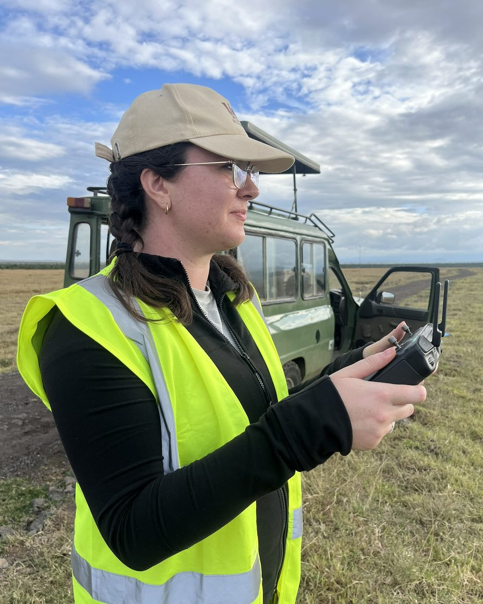

Jenna M. Kline
Computer Systems for Ecology
I build field-deployed cyber-physical systems for autonomous environmental sensing in dynamic, resource-constrained settings.
From algorithms to action through adaptive sensing in the field.
I earned my PhD in Computer Science & Engineering at The Ohio State University, advised by Dr. Christopher Stewart and Dr. Tanya Berger-Wolf. I am now a Postdoctoral Associate in MIT Civil & Environmental Engineering with Dr. Heidi Nepf, developing sensing systems for coastal resilience through the Climate Project at MIT.

Conducting fieldwork at Ol Pejeta Conservancy, Kenya.
From algorithms to action
Machine learning has transformed our ability to extract knowledge from environmental data, driving rapid advances in AI for nature. My research asks what it takes to operationalize this intelligence in the physical world: collecting the right observations, coordinating heterogeneous sensors and robots, adapting under resource constraints, and directing limited human attention where it is most valuable.
Working with ecologists, roboticists, and AI researchers, I develop and deploy the computer systems that make this possible, with applications in wildlife monitoring, biodiversity research, and coastal resilience.
Why ecosystems?
Dynamic and only partially observable, ecosystems expose fundamental challenges in sensing, coordination, and autonomy. I develop computer systems that address these challenges in the field and extend to other complex, resource-constrained environments.
Research areas
01 Adaptive autonomy
Systems that close the perception–control loop on individual sensing and robotic platforms while managing inference, navigation, compute, energy, and connectivity in real time.
02 Cross-modal sensing
Architectures that coordinate drones, camera traps, acoustic sensors, satellite observations, and other data sources across spatial and temporal scales.
03 Data infrastructure
Data standards, datasets, benchmarks, telemetry, and reusable tools that make intelligent cyber-physical systems — and the data they collect — findable, accessible, interoperable, reusable (FAIR), and AI-ready.
Selected work
Selected honors and awards
See complete list of current projects, mentorship, and service here.